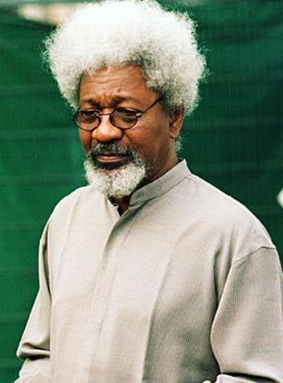

Wole Soyinka

Wole Soyinka was born Akinwande Oluwole "Wole" Babatunde Soyinka on July 13, 1934, in Abeokuta, near Ibadan in western Nigeria.
After finishing preparatory university studies in 1954 at Government College in Ibadan, Soyinka moved to England and continued his education at the University of Leeds, where he served as the editor of the school's magazine,
The Eagle
. He graduated with a bachelor's degree in English literature in 1958. (In 1972 the university awarded him an honorary doctorate).
He is a Nigerian playwright, novelist, poet, and essayist in the English language. He has published hundreds of works, including drama, novels, essays and poetry, and colleges all over the world seek him out as a visiting professor.
In 1986, Wole Soyinka was awarded the Nobel Prize in Literature, the first sub-Saharan African to be honoured in that category.
Soyinka is also a political activist, during the civil war in Nigeria he appealed in an article for a cease-fire.